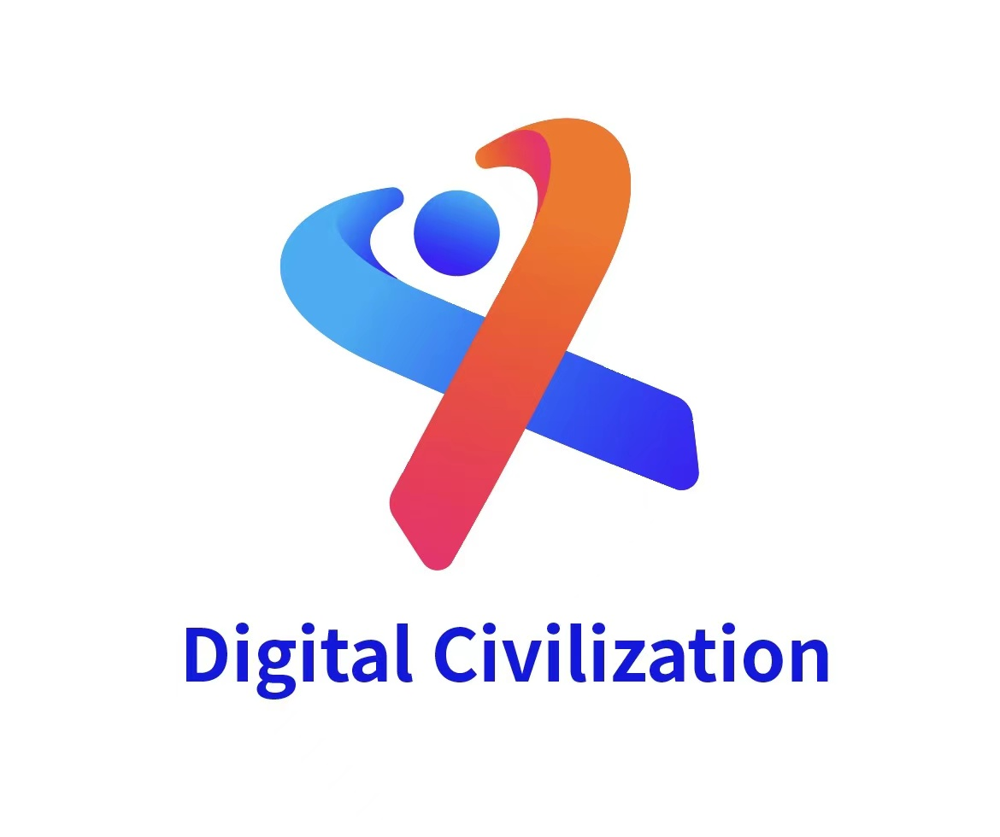
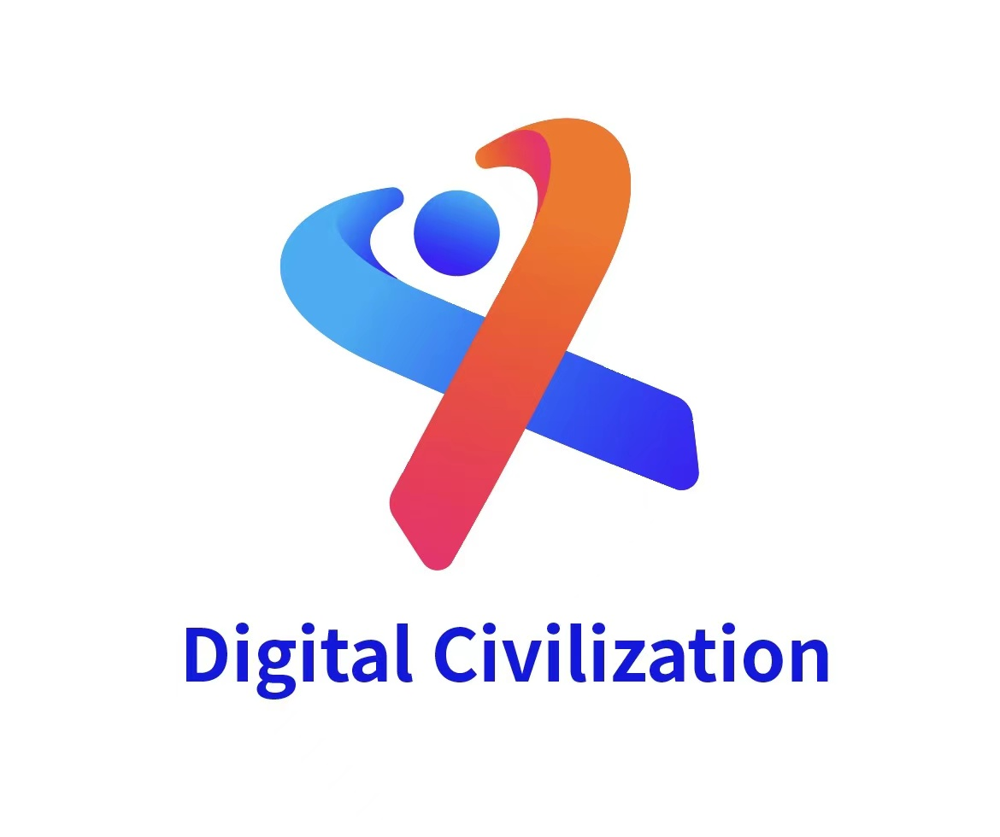

Building Technical and Governance Guardrails for Loyal AI Agents
12:00 – 13:00
As AI agents become embedded in organizations and public life, this session explores what it
means for them to be durably “loyal” to people and institutions, not just obedient to prompts.
We will examine technical architectures and governance mechanisms that can make agentic systems
auditable, accountable, and aligned with evolving human interests.
AI as a Catalyst for the Global Digital Economy
13:20 – 14:20
AI is collapsing the transaction costs of globalization, rewiring supply chains, finance, and
trade. This roundtable asks how intelligent systems can broaden participation in the digital
economy—especially for smaller firms and emerging markets—while avoiding new forms of
concentration, data colonialism, and systemic fragility.
The Future of Legal Practice: Strategic Implications of Legal AI
14:40 – 15:40
Legal AI is moving from document automation to genuine reasoning support. We will discuss how
law firms and in-house teams can treat AI as a source of strategic differentiation, how business
models and client expectations shift when analysis becomes data-driven, and what new forms of
trust, liability, and professional responsibility emerge.
The Post-AGI University
16:00 – 17:00
When intelligence is abundant, what remains distinctively “university”? This session examines
how research, teaching, and institutional missions change in a world of AI tutors, automated
hypothesis generation, and synthetic data, and how we can preserve curiosity, integrity, and
meaningful credit for human scholars.


 
